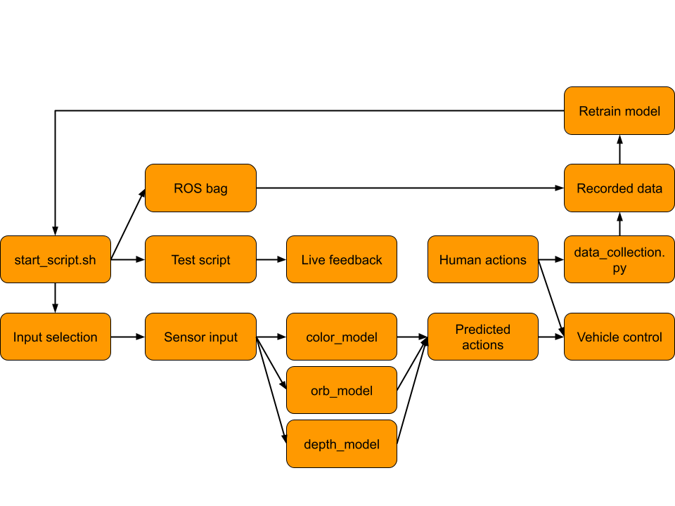

Autonomous Platform (Gen4)

$ git clone --recurse-submodules http://gitlab.infotivlab.se/internal-development/autonomous_platform.git # Internally
$ git clone --recurse-submodules https://github.com/infotiv-research/autonomous_platform
This is the repository for Autonomous Platform at Infotiv Technology Development. - The beginning of the fourth generation of Autonomous Platform was created by Fredrik Juthe and Erik Magnusson as part of a master thesis at Chalmers University of technology spring 2023 under supervision of Hamid Ebadi. The master thesis designed the system E/E architecture and implemented a base on which future functionality could be added to. A published version of the thesis with the title of "Design of a modular centralized E/E and software architecture for a small-scale automotive platform" is accessible in in this link .
- The implementation of software pipeline for Imitation Learning for achieving autonomous driving using both behavioral cloning (BC) and Human Gated Dataset Aggregation (HG-DAgger) is done by Arvid Petersén and Johan Wellander under supervision of Hamid Ebadi as a part of a master thesis with the title of Autonomous Driving via Imitation Learning in a Small-Scale Automotive Platform - a Comparison Between BC, HG-DAgger, and the use of Various Inputs that is accessible in this link .


- The latest public version of documentation and source code for Autonomous Platform (AP) project is available in the following address: https://infotiv-research.github.io and https://github.com/infotiv-research.
- The printer friendly version of this document is available in this link .
Introduction
Autonomous Platform (generation 4) project is a platform on which internal and external research projects can be tested on. (i.e Autonomous Drive algorithms) and to expand the knowledgeable in different aspects of software and hardware system development. The purpose of this repository is to collect all the software components in one mono-repository, meaning all software (& hardware design) for the different components is placed in a single repository. Any future work on autonomous platform should be integrated into one of the repositories sub directories. This means that any future development or research can always refer back to previous work, making it a viable long term project at Infotiv AB.

Features and Capabilities
Below, the capabilities and functions of autonomous platform generation 4 are summarized.
Drive by wireless controller
AP4 is capable to be remotely controlled using an xbox 360 controller. The xbox wireless adapter should be connected to the Raspberry Pi 4b usb port.
Remote access to platform & software
A wifi router is mounted on the back plate, this allows developers to connect to the software whilst it is running to monitor internal states. High-level software can stream commands to the low-level software remotely.
Accelerating, Brake & Steering
The platform can be driven forwards, backwards and can be steered. This is done programmatically, meaning "Drive by Wire". Joysticks commands from the xbox controller can therefore be configured to control the platform. In the same way it is trivial to take commands from Autonomous Drive algorithms to control the platform.
The steering signals and throttle signals are currently being without the turbo option in teleop_twist_joy, meaning the signal may be sent at 70% of the maximum value from the xbox controller to the AP4. This could be explored and maybe changed change, however that would maybe mean that there will be a need to retrain the imitation learning models from scratch to be abel to handle the increased speed.
Scalability
The idea with autonomous platform generation 4 is that it should be a scalable base platform on with future functionality should be added onto. Scalability and modularity is therefore a key concept for the platform.
Hardware wise, every component can be mounted where it is deemed appropriate using a pre defined hole pattern. It is possible to move existing hardware as time goes on. New hardware can be added as long as it uses the pre defined hole pattern present on the metal sheets.
Embedded sensors can be added using ECUs following a set template. These can then be added to the existing system without breaking backwards compatibility using a defined CAN bus network. High data throughput sensors can be added to the platform using USB connection.
The software is built to be scalable and modular. The software structure is described in detail below. The software is deployed inside docker containers, making it easily deployable and scalable. The controlling software is written using the Robot Operating System 2 (ROS2) Framework. This allows developers to easily add onto existing software.
Power Module
Consists of a led acid battery and a power supply unit, both can be connected to power the autonomous platform. Meaning the platform can be powered whilst driving around from battery. Whilst in a lab environment power can be supplied to the platform through a wall socket.
Digital Twin
The digital twin is implemented in the high-level software. It is described in detail in High_Level_Control_Computer/README.md. It is automatically started when the high-level docker container is started.
Imitation Learning
Imitation learning is used to learn driving in an environment by observing an expert and by imitating its behavior
System Architecture
The autonomous platform has three different software components:
- High-level control
- Low-level control
- Embedded control
High-level is supposed to be run on a high performance computer and can be run without being connected to the rest of the system. Low-level control is run on the Raspberry Pi 4b mounted on the hardware platform. The embedded control is run on the ECU nodes mounted to the platform. Software in high-level and low-level are communicating using the Robot Operating System (ROS2) framework. Software in the embedded control is written using the Arduino framework.

The three software components are connected through hardware and software links. High-level and low-level software is connected using an ethernet interface, meaning the two softwares should be run whilst connected to the same network. The low-level control is connected to the embedded control through a CAN bus network. A custom CAN library and interface has been created to link the embedded control with the low-level control.
High-level control
The high-level software consists of three components, an autonomous driving algorithm and a digital twin interface with the Gazebo physics simulator and a switch which sends commands to either the digital twin or the physical platform. As of June 2023 only a simple digital twin is implemented in this software layer. Starting up the high-level control container will start up Gazebo and Rviz. See FUTURE_WORK.md for what could be implemented.
 In the illustration above, three components can be seen. Autonomous driving stack, digital switch and gazebo physics simulator. These components should be implemented as a set of ROS2 computational nodes. Note: This is the intended structure but has not been implemented yet.
In the illustration above, three components can be seen. Autonomous driving stack, digital switch and gazebo physics simulator. These components should be implemented as a set of ROS2 computational nodes. Note: This is the intended structure but has not been implemented yet.
- Autonomous Drving Stack is the proposed set of algorithms which takes in sensor information and responds with suitable actuator control commands.
- Digital Twin Switch is the proposed software switch that is supposed to re-route AD commands to either the physical platform or the digital twin. In the same way, sensory data should be routed from the physical platform or digital twin. The same actuator commands and sensor data type should be used on the digital twin as the physical platform. This ensures that proposed AD algorithms can first be tested on the digital twin and then seamlessly be tested on the physical platform.
- Gazebo Physics Simulator Is the proposed digital twin simulation environment. It integrates seamlessly with the ROS2 framework. The physical dimensions and driving dynamics can be configured in xml format. Different simulation environments can be setup and saved as world files. Meaning different AD scenarios can be tested easily.
The high level control folder, High_Level_Control_Computer consist of a docker container and a folder with software. The software can start a simple digital twin of Autonomous platform Generation 4. The folder contains a docker-compose file which starts a docker container and mounts the ap4_hlc_code folder in the container. A ROS2 launch file is then run which starts up the digital twin. The container can be started on any device supporting graphics, i.e a laptop.
Low-level control
The low-level software is responsible for taking platform commands sent from higher-level software and convert it into commands which are sent to the actuators. It is implemented on a Raspberry Pi 4b. A simple vehicle control converts commands sent on \cmd_vel ROS2 topic into ROS2 topics which gets relayed to the embedded control. In the same way the low-level software is responsible for taking any sensor input and passing it forwards to higher-level software. A custom package to convert ROS2 topics into CAN bus has been created, making it simple to interface high-level software with the embedded control software.
The hardware interface folder, Hardware_Interface_Low_level_pc , contains a docker-compose file which starts a docker container and mounts the ap4_hwi_code folder in the container. A ROS2 launch file is then run which starts up software that interfaces with hardware. This software is specific for the hardware mounted on autonomous platform, therefore it can only be started properly on the Raspberry Pi 4b mounted onto the platform.

Embedded control
The embedded software is implemented on the ECUs placed on the platform. This firmware acts as an interface between hardware (actuators or sensors) and pass data to and from the low-level software. Currently a single embedded software is implemented, Steering and Propulsion Control Unit (SPCU).

CAN_Nodes_Microcontroller_Code folder contain PlatformIO projects for each ECU, that is the embedded software running on the generic ECUs. An example of ECU is the SPCU (Steering, Propulsion Control Unit).Furthermore here is the CAN database and the corresponding CAN-library located.
Autonomous Driving
The autonomous driving (AD) is implemented using the Imitation library where the structure for Behavioral Cloning (BC) and Human Gated Dataset Aggregation (HG-DAgger) are developed for this project. All of the AD is handled by the high-level docker and the overall structure of the implementation can be seen below.

Training Data
To collect data from training and test drive rosbag2 can be found in High_Level_Control_Computer/IMITATION_LEARNING.md To collect data from training and test drive rosbag2 is used. The data collection is done in the High Level Planner Docker and specifically in the folder bagfiles_2024, within source. With the High Level Control Docker running, the directory is accessed as follows.
Attention: To download and train data and the model either follow huggingface instruction or after adding your SSH public key to your user settings , request for permission and clone the repo as a submodule by adding --recurse-submodules when you clone the repository. All recorded data used for training and validation in the project can be found here.
Examples of the data can be seen below: - Orb positions overlay on color image - View from depth camera

Start AP4
Below follows a quick guide on how to start autonomous platform generation 4 and control it using an xbox 360 controller.
- Connect xbox wireless adapter to Raspberry Pi 4b
- Connect Power source: (Battery or PSU) to POWER IN plug.
- Release Emergency stop
- Flip start switch
- Turn on Nine-bot segway (on backside of platform) Segway will beep once.
System will now boot up. The wheels will move back and forth.
- Wait 60 seconds (hardcoded in the SPCU ECU unit)
The platform should beep again after waiting 60 seconds and turn right to left, meaning it is ready to use.
The platform should be controllable using the xbox controller. By holding down the right bumper button and moving the left joystick the front wheels should move and back wheels turn forwards.
- Turn of the AP4 through flipping back the start switch
Connect (wireless) and start AP software stack
To check that the software is up and running as expected one can connect to the platform wirelessly and monitor the ROS2 network. On an external computer (dev-laptop or other linux computer) start the high-level software container. Make sure the computer is connected to the wifi network of autonomous platform.
NOTE: User credentials are available only in the infotiv internal gitlab repository.
NOTE: high-level software automatically starts the digital twin simulation environment, the RVIZ and gazebo windows can be ignored.
In a new terminal, start the docker container:
cd High_Level_Control_Computer
docker-compose build
docker-compose up
In a new terminal, enter the docker container
docker exec -it ap4hlc bash
Source environment variables and export configuration environment variables
cd ap4hlc_ws
source install/setup.bash
export ROS_DOMAIN_ID=1
The low-level software components should be visible to the high level software components. This can be checked with
ros2 node list
The expected output will be something like this:

Information sent between nodes (such as sensor data or CAN bus traffic) can be monitored using
ros2 topic echo <topic_name>
For a list of active ROS2 topics, the following command can be used.
ros2 topic list
If the topics and nodes show up, the system has started correctly and can be controlled by either an xbox control or any future high-level software control.
Repository overview
The repository consists of three directories containing software (with a few subdirectories each):
Within these directories, there exists useful documentation regarding each software component and sub components.
CAN_Nodes_Microcontroller_Code/README.mdCAN_Nodes_Microcontroller_Code/CAN_LIBRARY_DATABASE/README.mdHardware_Interface_Low_Level_Computer/README.mdHigh_Level_Control_Computer/README.mdHigh_Level_Control_Computer/IMITATION_LEARNING.mdHigh_Level_Control_Computer/DONKEY_CAR_SETUP.md
The documentation is split up into smaller parts to keep information manageable and separated according to what can be relevant at a given time. The major documentation files located in the root directory of the repository are:
README.md: The documentation you first see when you open the gitlab, this document.SOFTWARE_DESIGN.md: A quick introduction to important software and frameworks used on AP4 and how to install the required software. In illustration of how the network of hardware is connected is also can be found there.HARDWARE_DESIGN.md: An introduction to hardware that is used on AP4 and how to add a new one.HOW_TO_EXTEND.md: Are you a new team member? Look at this file for a quick introduction to the project and how to get going. It also has a general design principles for the project to keep in mind when adding new functionality.TEST_DEBUGGING.md: Contains a list of known errors when working with AP4 and how to solve themISSUES_AND_FUTURE_WORK.md: A Comprehensive list of known bugs & issues and possible future work to be done on the platform.REQ_SPEC_BOOM.xlsxcontains a list of decided upon requirements and specifications which the autonomous platform should follow. A complete bill of materials (hardware components) can be found in this file. It contains items, what purpose they serve, where they can be bought and a total estimated cost. As of June 2023 the total cost is 16500 SEK to build the base platform and have spare parts over.
Thanks

We would like to extend thanks Gokartcentralen in Kungälv for generously allowing us to drive, test, and validate our go-kart at their track. Without Gokartcentralen and the helpful individuals working there, this project would not have turned out as it did.